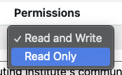

Request or Change Resource Allocations#
Managers on a project or class can request a Compute or Storage Allocation and select which User(s) should have access to those allocations. All allocation requests will need to be approved by HPC Support.
Note
Please see Add or Remove Users for how to manage User permissions on an already active allocation.
Resource Types#
Resource |
Description |
|---|---|
Compute |
Allocates compute time quotas for CPU hours, GPU hours, and memory hours. |
Storage |
Allocates shared folder with storage quotas on memory and number of files. |
Compute Allocations#
There are 3 fields to specify when requesting a Compute allocation: CPU hours, GPU hours, and memory hours. Below are descriptions of each field:
Field |
Description |
|---|---|
CPU hours |
Computed per job as (number of allocated CPU cores) * (run time in hours). For example, if a job was allocated 64 cores and ran for 30 minutes, it used (64) * (0.5) = 32 CPU hours of compute time. |
GPU hours |
Computed per job as (number of allocated GPUs) * (run time in hours). For example, if a job was allocated 4 GPUs and ran for 1 hour and 30 minutes, it used (4) * (1.5) = 6 GPU hours of compute time. |
Memory hours |
Computed per job as (amount allocated memory in GB) * (run time in hours). For example, if a job was allocated 128GB of memory and ran for 45 minutes, it used (128) * (0.75) = 96 Memory hours. |
Note
CPU hour, GPU hour, and memory hour quota’s will persist across all M3 queues and SuperPod queues. For example, if you use up your quota of GPU hours entirely on the gpu-dev queue on M3, then you will not have GPU hours left to use on M3 or the SuperPod. If you need assistance in determining how many hours to request, please submit a help desk ticket to help@smu.edu with [HPC] in the subject line.
Request Compute Allocation#
Video Walkthrough
Select Compute as your Resource from the dropwdown.
Provide a short description to make your allocation easier to identify.
Provide a 2-3 sentence justification for the resources you are requesting.
Select a Start Date and End Date for your allocation. The limit is 1 year, but will be renewable when the end date is near.
Enter the number of CPU hours you will need.
General Guidelines
When requesting CPU hours, you MUST request memory hours as well. The general guideline is that you need 4 memory hours for 1 CPU hour. If you need assistance in determining how many hours to request, please submit a help desk ticket to help@smu.edu with [HPC] in the subject line.
Enter the number of GPU hours you will need.
General Guidelines
When requesting GPU hours, you MUST request both CPU hours and memory hours as well. The general guideline is that you need 16 CPU hours and 96 memory hours per 1 GPU hour. If you need assistance in determining how many hours to request, please submit a help desk ticket to help@smu.edu with [HPC] in the subject line.
Enter the number of memory hours you will need.
If you have users on your project, select which users should have access to the allocation.
Please read and acknowledge that you will follow the ODSRCI Community Guidelines.
Wait for your allocation to be approved by HPC Support.
{kind=link}
{kind=link}
{kind=link}
Change Compute Allocation#
To change a the CPU hours, GPU hours, or memory hours on a Compute Allocation,
On your project page, select the Allocation you would like to change under Information in the Allocations panel.
Click on
 .
.If needed, request an extension to your allocation date Request End Date Extension for 30, 60, or 90 days.
Note
When the End Date is approaching, you will be able to renew the project for another cycle. We encourage users to do this rather than extending the current cycle by 30-90 days.
If needed, update your CPU hours, GPU hours, and memory hours under
 .
.Note
Your usage for CPU hours, GPU hours, and memory hours will reset to 0, and you will have the new quota you request available to you. For example, if you have 30000 CPU hours and only need 2000 more hours, you would request 2000 CPU hours, not 32000. This works differently than Storage Allocations.
Provide a justification for the change in your allocation.
Check that your change has been requested on the Allocation Details page under Allocation Change Requests. It will show as Pending
You will recieve an email when your allocation change request is approved.
{kind=link}
{kind=link}
Storage Allocations#
A Storage allocation is a shared directory with a quota on gigabytes (GB) of storage, and number of files. Every HPC user will still have a $HOME directory and a $SCRATCH directory that does not count towards the quota. Please see the Purge Policy for details.
Request Storage Allocation#
Video Walkthrough
Select Storage as your Resource from the dropwdown.
Provide a short description to make your allocation easier to identify.
Provide what you would like to name the shared folder. If a name is not provided, a generic name will be assigned.
Provide a 2-3 sentence justification for the resources you are requesting.
Select a Start Date and End Date for your allocation. The limit is 1 year, but can be renewed.
Enter the amount of storage you would like in GB.
Note
This amount is a storage quota, which means you are capped at the provided GB, but are not guarunteed to get that much.
Enter the number of files you expect to create or use in this allocation.
General Guidelines
A conda environment needs about 100,000 files.
A safe bet for most people is 500,000 files for a storage allocation.
If you have users on your project, select which users should have access to the shared folder and whether they should have Read and Write access or Read Only access.
Note
Read Only means that they will only be able to see file contents, but not change them or create new files in the shared directory. Read and Write gives them full editing permissions.
Please read and acknowledge that you will follow the ODSRCI Community Guidelines.
Wait for your allocation to be approved by HPC Support.
{kind=link}
{kind=link}
Change Storage Allocation#
To change the storage size or number of files in a Storage Allocation,
On your project page, select the Allocation you would like to change under Information in the Allocations panel.
Click on
.If needed, request an extension to your allocation date Request End Date Extension for 30, 60, or 90 days.
Note
When the End Date is approaching, you will be able to renew the project for another cycle. We encourage users to do this rather than extending the current cycle by 30-90 days.
If needed, update your storage size and file count under
.Note
Please request the total amount of storage and file count you need. For example, if you previously had 200GB and a 1000 file count and you need to add 100GB and 500 to your file count, you will need to request 300GB and 1500 for your file count.
Provide a justification for the change in your allocation.
Check that your change has been requested on the Allocation Details page under Allocation Change Requests. It will show as Pending
You will recieve an email when your allocation change request is approved.